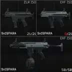

ISO Submachine Gun
- Downloads
- 3,781
- Favourites
- 0
Imported from a parallel world of Call of Duty, this mod introduces five unique submachine gun variants under the ZLR and Expedite Firearms brands. Designed for high-action engagements, these SMGs come in different calibers, fire rates, and magazines.

Included Versions:
- ZLR ISO 9 G
• 9x19mm Glock Magazine
• 850 RPM
- Expedite Firearms ISO 9 G
• 9x19mm Glock Magazine
• 1000 RPM
- Expedite Firearms ISO 9
• 9x19mm MP9 Magazine
• 1000 RPM
- Expedite Firearms ISO 45 G
• .45 ACP Glock Magazine
• 900 RPM
- Expedite Firearms ISO 45
• .45 ACP Proprietary Magazine
• 900 RPM
Customization options include:
- 5 types of extended handguards
- 4 barrel modifications
- 3 pistol grip modifications
- 2 stock modifications
All default stocks are retractable.
Models and textures are properties of Activision.
1. Drop the mod files into the appropriate mod folder of your game.
2. Customize weapon options using the included configuration files, if available.
3. Each weapon variant and modification is modular and can be selectively disabled or customized.
4. For best performance and compatibility, check your mod loader’s documentation.
- When reuploading or sharing this mod, please clearly indicate the author or source.
- Do not distribute files with the .bundle extension (or its variants) from this mod without permission.
- Respect the original creator’s rights as these models and textures are properties of Activision.
- Original models and textures: Activision
- Special thanks to: Massivesoft
Version
1.1.2
No description was available in the snapshot.